SEASTAR 360 — CHECKER 뷰어 사용 설명서
이 설명서는 "CHECKER 만" 모드로 발급된 열람 링크를 받은 분을 위한 것입니다. 이 링크에서는 번호가 매겨진 점검 포인트(핀)와 리더선만 보이고, 360 사진·360 뷰어는 보이지 않습니다(서버가 데이터 단계에서 걸러서 보냅니다).
1. 링크로 들어가기
전달받은 열람 링크(https://…?mode=viewer&d=…&lk=…)를 누르면 로그인 없이 바로 도면이 열립니다. 상단에 CHECKER 배지와 포인트 수가 표시됩니다 — 이 숫자가 CHECKER 포인트 개수입니다(360 포인트는 세지 않습니다).
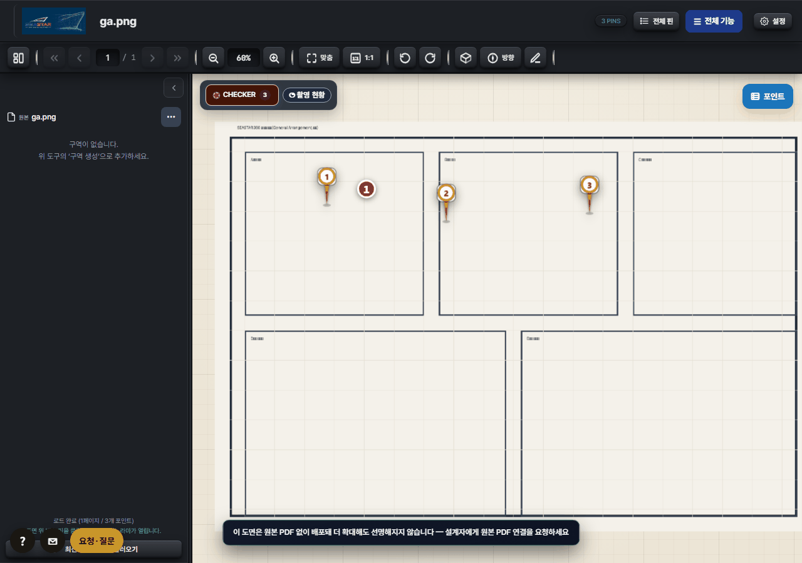
2. 도면 이동·확대/축소
상단 도구줄의 돋보기(+/−) 버튼이나 마우스 휠로 확대·축소합니다. 화면을 드래그하면 도면이 움직입니다. 휴대폰에서는 두 손가락으로 벌리거나 모아 확대·축소(핀치 줌)합니다. [맞춤] 버튼을 누르면 도면 전체가 화면에 맞춰집니다.
3. 사이드바(트리) 열기
좌상단 메뉴 아이콘을 누르면 프로젝트 → 구역 → 영역 구조의 트리가 열립니다. 트리에서 다른 구역을 선택하면 그 구역의 CHECKER 포인트로 화면이 바뀝니다.
4. 번호 핀 보기
도면 위 주황색 물방울 모양이 CHECKER 번호 핀입니다. 숫자는 점검 순서/번호입니다. 핀을 한 번 누르면 그 핀을 중심으로 화면이 확대됩니다(①).
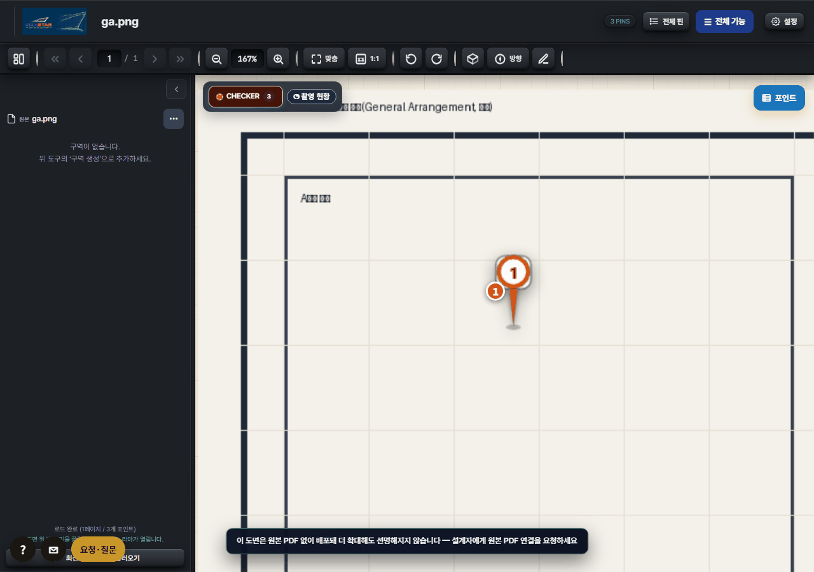
5. 핀을 눌러 요청·질문 보내기
확대된 핀을 한 번 더 누르면 그 포인트의 요청·질문 창이 열립니다. CHECKER 포인트는 사진을 등록하지 않는 모드라 "이 지점에는 등록된 360° 사진이 없습니다 — 필요한 내용을 디자이너에게 요청할 수 있습니다"라는 안내가 뜹니다. [요청]·[질문] 중 고르고 내용을 적어 보냅니다.
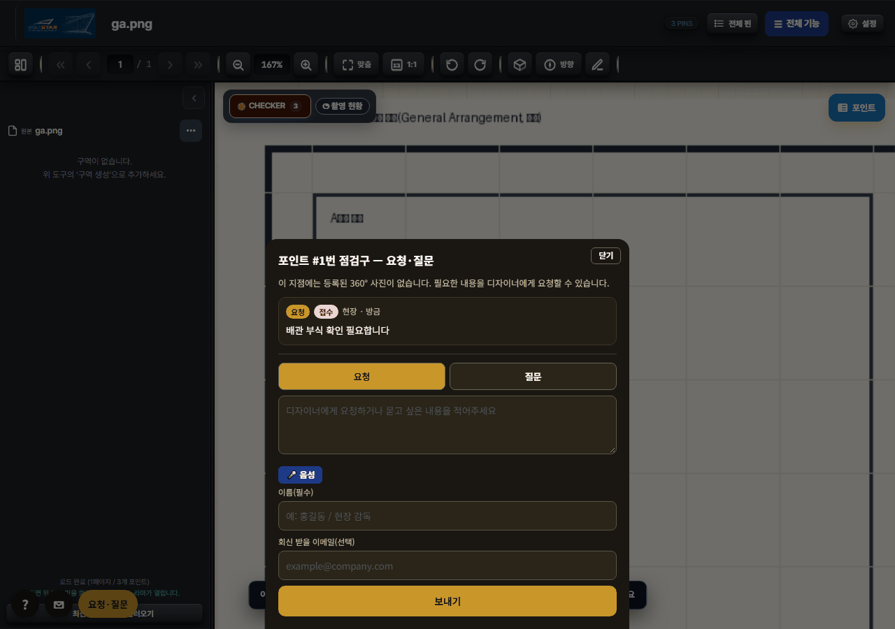
6. 전체 핀 목록
상단 [전체 핀] 버튼을 누르면 이 구역의 CHECKER 포인트를 목록으로 볼 수 있습니다(번호·이름으로 검색 가능).
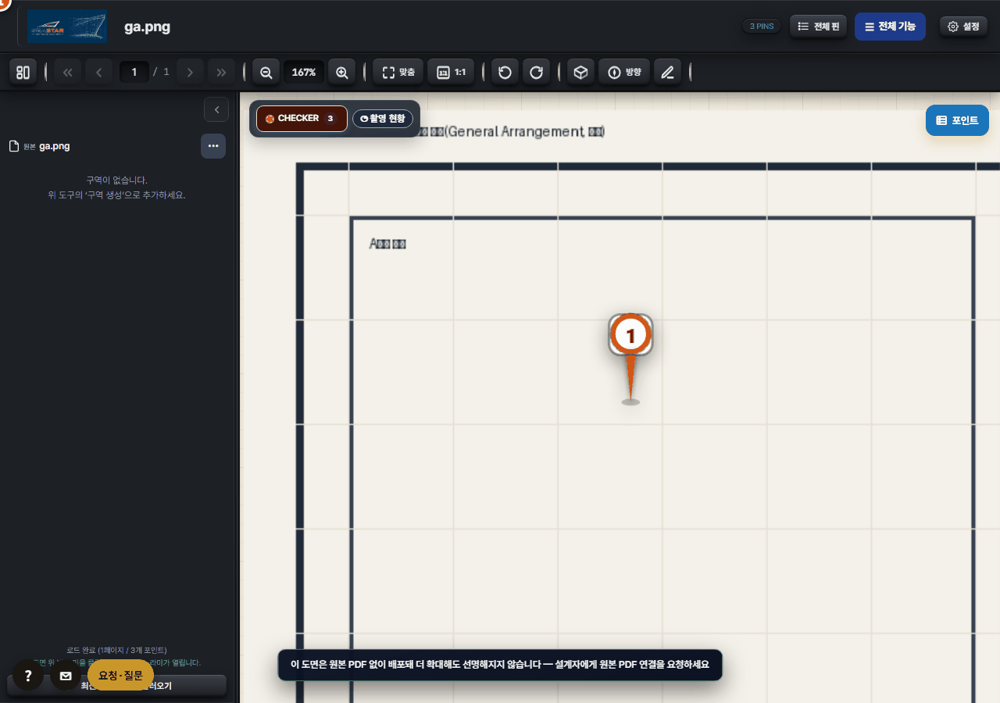
7. 도움말("?") 모드
화면 아래 물음표(?) 버튼을 누르면 설명이 필요한 버튼 옆에 작은 "?" 표시가 나타납니다. 그 표시를 누르면 그 버튼의 쓰임이 바로 뜹니다. 다시 누르면 꺼집니다.
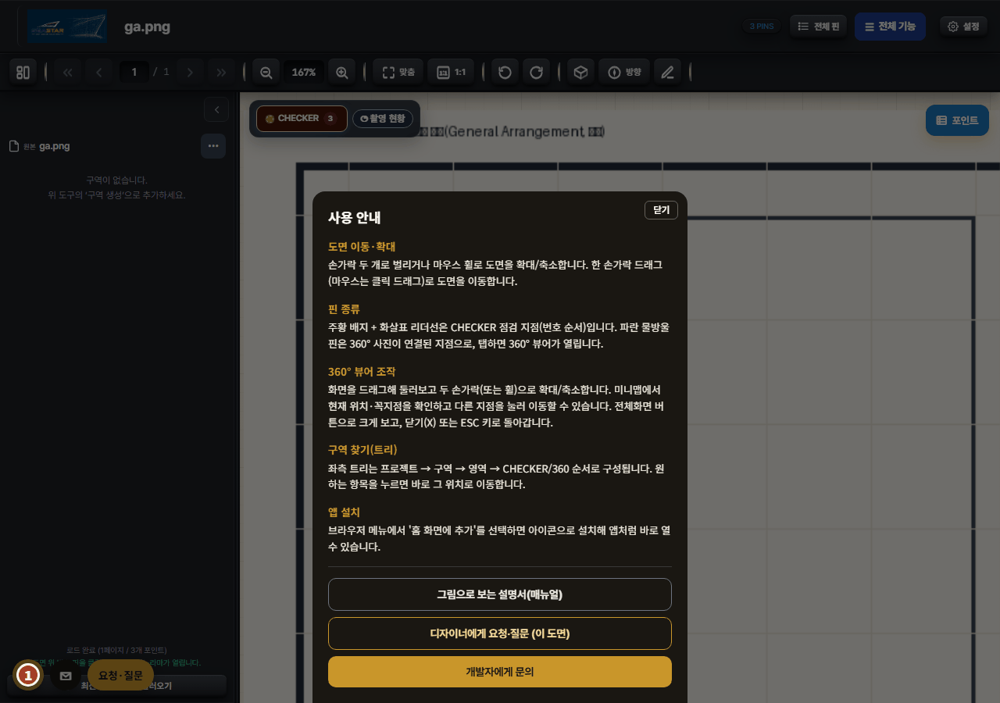
8. 휴대폰 화면(375px)
휴대폰에서도 같은 기능을 그대로 쓸 수 있습니다. 화면이 좁은 만큼 버튼이 아래쪽에 모여 있고, 손가락으로 핀치 줌·드래그합니다.
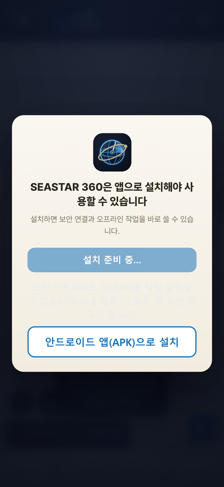
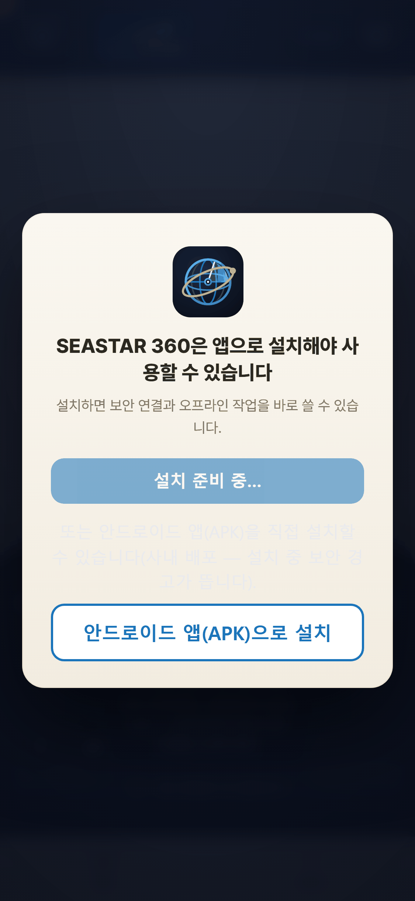
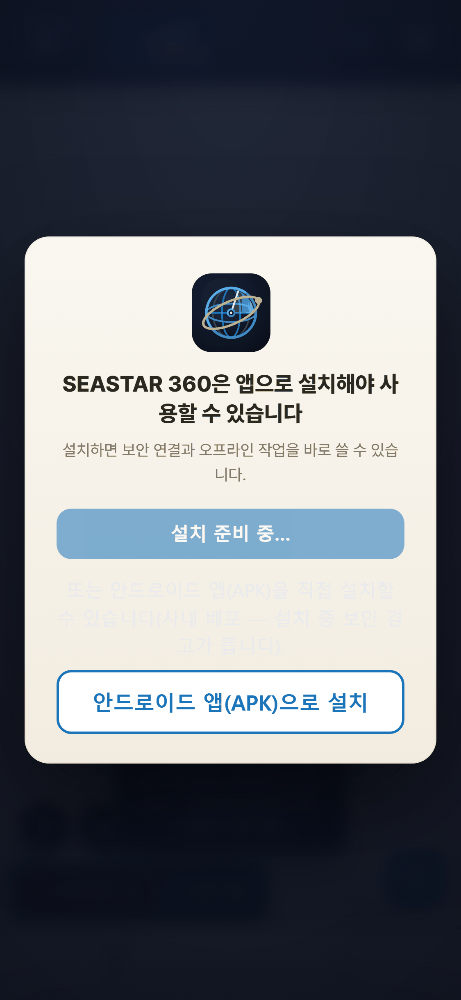
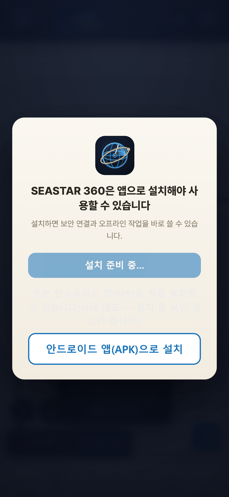
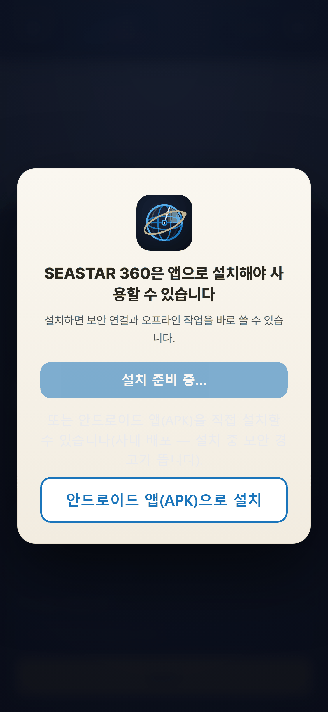
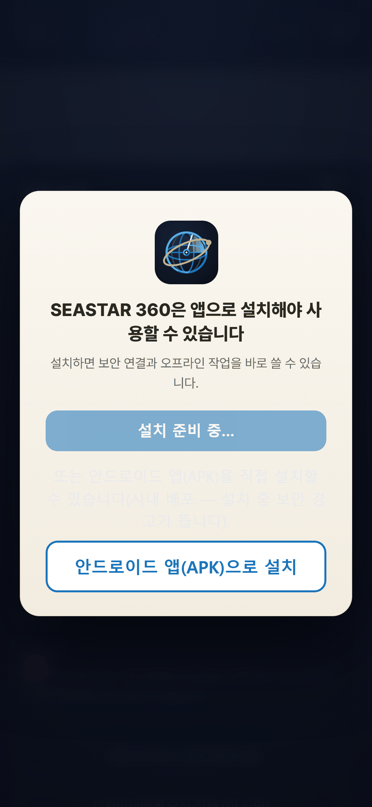
9. 오프라인 보관 · 앱 설치
한 번 열어본 도면은 인터넷이 끊겨도 다시 볼 수 있도록 자동으로 보관됩니다. 휴대폰 화면 아래 설치 안내 배너에서 [설치]를 누르면 홈 화면에 앱처럼 추가됩니다(iOS는 공유 버튼 → "홈 화면에 추가").

안드로이드 전용 앱(APK) 설치 — 5단계
사내 배포 앱이라 Play 스토어를 거치지 않습니다. Chrome·설치 화면이 보안 경고를 띄우는 것이 정상이며, 아래 순서대로 진행하세요.
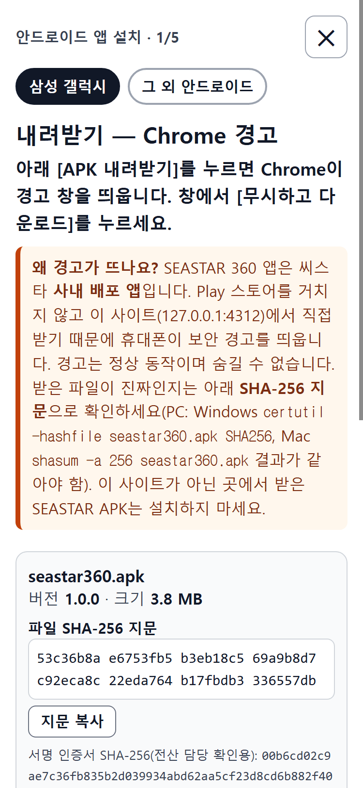
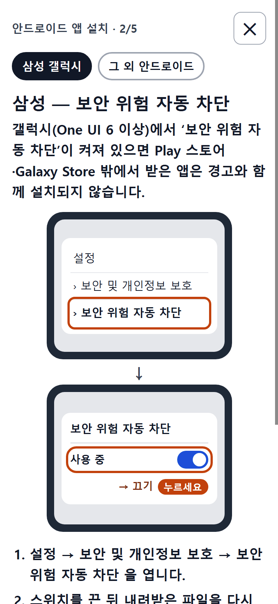
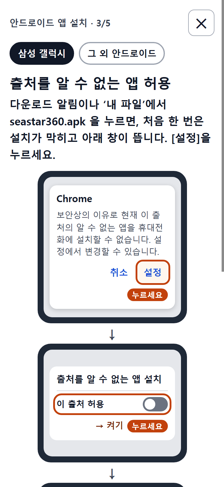

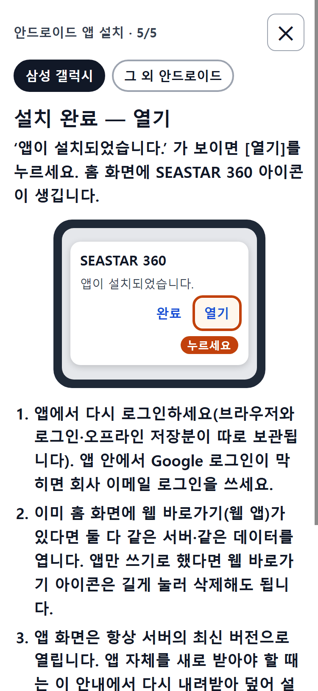
자주 묻는 질문
- Q. 360 사진이 하나도 안 보여요.
- A. 정상입니다. 이 링크는 CHECKER 전용으로 발급되어 360 포인트는 서버에서부터 내려오지 않습니다. 360 사진이 필요하면 담당자에게 "360 링크"를 요청하세요.
- Q. 링크가 "폐기되었습니다"라고 나옵니다.
- A. 설계자가 이 링크를 껐거나 새로 발급했습니다. 최신 링크를 다시 요청하세요.
- Q. 로그인해야 하나요?
- A. 아니요. 링크 자체가 열람 권한입니다. 로그인 없이 바로 볼 수 있습니다.